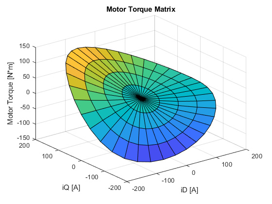

PMSM Drive Using Field-Oriented Control
This example models an electric drive with supporting design scripts that: 1. Determine open-loop frequency response and check stability margins. This requires Simulink® Control Design, using the Frequency Response Estimator block. 2. Determine the optimum d-axis and q-axis currents that minimize overall motor losses when delivering a commanded torque and speed. The Electric Drive is implemented using: 1. A detailed nonlinear motor model in the form of tabulated flux linkages and Steinmetz coefficients. 2. A Field-Oriented Controller (FOC) that has been optimized to minimize motor losses.
Contents
System Model
Model
model = 'pmsm_foc_drive'; open_system(model) set_param(find_system(bdroot,'FindAll','on','type','annotation','Tag','ModelFeatures'),'Interpreter','off');
Inverter Model
open_system('SwitchingInverterTabulated');
Field-Oriented Controller
open_system([model, '/PMSM Controller/PMSM Field-Oriented Controller'], 'force');

Plot Losses With Original Controller
out = sim(model); plotSystemLosses(out.simlog_pmsm_foc_drive);
Optimize Controller to Minimize Losses
ControllerOptimization; set_param([model, '/PMSM Controller'], 'ControllerParameters', 'OptimalControllerParams');
SystemParams.m successful run Warning: Duplicate data points have been detected and removed - corresponding values have been averaged. Warning: Duplicate data points have been detected and removed - corresponding values have been averaged. Warning: Duplicate data points have been detected and removed - corresponding values have been averaged. Solving problem using fmincon. Feasible point with lower objective function value found. Local minimum found that satisfies the constraints. Optimization completed because the objective function is non-decreasing in feasible directions, to within the value of the optimality tolerance, and constraints are satisfied to within the value of the constraint tolerance. Solving problem using fmincon. Local minimum found that satisfies the constraints. Optimization completed because the objective function is non-decreasing in feasible directions, to within the value of the optimality tolerance, and constraints are satisfied to within the value of the constraint tolerance. Solving problem using fmincon. Feasible point with lower objective function value found. Local minimum found that satisfies the constraints. Optimization completed because the objective function is non-decreasing in feasible directions, to within the value of the optimality tolerance, and constraints are satisfied to within the value of the constraint tolerance. Solving problem using fmincon. Feasible point with lower objective function value found. Local minimum found that satisfies the constraints. Optimization completed because the objective function is non-decreasing in feasible directions, to within the value of the optimality tolerance, and constraints are satisfied to within the value of the constraint tolerance. Solving problem using fmincon. Feasible point with lower objective function value found. Local minimum found that satisfies the constraints. Optimization completed because the objective function is non-decreasing in feasible directions, to within the value of the optimality tolerance, and constraints are satisfied to within the value of the constraint tolerance. Solving problem using fmincon. Local minimum found that satisfies the constraints. Optimization completed because the objective function is non-decreasing in feasible directions, to within the value of the optimality tolerance, and constraints are satisfied to within the value of the constraint tolerance. Solving problem using fmincon. Feasible point with lower objective function value found. Local minimum found that satisfies the constraints. Optimization completed because the objective function is non-decreasing in feasible directions, to within the value of the optimality tolerance, and constraints are satisfied to within the value of the constraint tolerance. Solving problem using fmincon. Local minimum found that satisfies the constraints. Optimization completed because the objective function is non-decreasing in feasible directions, to within the value of the optimality tolerance, and constraints are satisfied to within the value of the constraint tolerance. Solving problem using fmincon. Feasible point with lower objective function value found. Local minimum found that satisfies the constraints. Optimization completed because the objective function is non-decreasing in feasible directions, to within the value of the optimality tolerance, and constraints are satisfied to within the value of the constraint tolerance. Solving problem using fmincon. Feasible point with lower objective function value found. Local minimum found that satisfies the constraints. Optimization completed because the objective function is non-decreasing in feasible directions, to within the value of the optimality tolerance, and constraints are satisfied to within the value of the constraint tolerance. Solving problem using fmincon. Initial point is a local minimum that satisfies the constraints. Optimization completed because at the initial point, the objective function is non-decreasing in feasible directions to within the value of the optimality tolerance, and constraints are satisfied to within the value of the constraint tolerance. Solving problem using fmincon. Feasible point with lower objective function value found. Local minimum found that satisfies the constraints. Optimization completed because the objective function is non-decreasing in feasible directions, to within the value of the optimality tolerance, and constraints are satisfied to within the value of the constraint tolerance. Solving problem using fmincon. Feasible point with lower objective function value found. Local minimum found that satisfies the constraints. Optimization completed because the objective function is non-decreasing in feasible directions, to within the value of the optimality tolerance, and constraints are satisfied to within the value of the constraint tolerance. Solving problem using fmincon. Local minimum found that satisfies the constraints. Optimization completed because the objective function is non-decreasing in feasible directions, to within the value of the optimality tolerance, and constraints are satisfied to within the value of the constraint tolerance. Solving problem using fmincon. Local minimum found that satisfies the constraints. Optimization completed because the objective function is non-decreasing in feasible directions, to within the value of the optimality tolerance, and constraints are satisfied to within the value of the constraint tolerance. Solving problem using fmincon. Local minimum found that satisfies the constraints. Optimization completed because the objective function is non-decreasing in feasible directions, to within the value of the optimality tolerance, and constraints are satisfied to within the value of the constraint tolerance. Solving problem using fmincon. Feasible point with lower objective function value found. Local minimum found that satisfies the constraints. Optimization completed because the objective function is non-decreasing in feasible directions, to within the value of the optimality tolerance, and constraints are satisfied to within the value of the constraint tolerance. Solving problem using fmincon. Feasible point with lower objective function value found. Local minimum found that satisfies the constraints. Optimization completed because the objective function is non-decreasing in feasible directions, to within the value of the optimality tolerance, and constraints are satisfied to within the value of the constraint tolerance. Solving problem using fmincon. Feasible point with lower objective function value found. Local minimum found that satisfies the constraints. Optimization completed because the objective function is non-decreasing in feasible directions, to within the value of the optimality tolerance, and constraints are satisfied to within the value of the constraint tolerance. Solving problem using fmincon. Feasible point with lower objective function value found. Local minimum found that satisfies the constraints. Optimization completed because the objective function is non-decreasing in feasible directions, to within the value of the optimality tolerance, and constraints are satisfied to within the value of the constraint tolerance. Solving problem using fmincon. Feasible point with lower objective function value found. Local minimum found that satisfies the constraints. Optimization completed because the objective function is non-decreasing in feasible directions, to within the value of the optimality tolerance, and constraints are satisfied to within the value of the constraint tolerance. Solving problem using fmincon. Local minimum found that satisfies the constraints. Optimization completed because the objective function is non-decreasing in feasible directions, to within the value of the optimality tolerance, and constraints are satisfied to within the value of the constraint tolerance. Solving problem using fmincon. Feasible point with lower objective function value found. Local minimum found that satisfies the constraints. Optimization completed because the objective function is non-decreasing in feasible directions, to within the value of the optimality tolerance, and constraints are satisfied to within the value of the constraint tolerance. Solving problem using fmincon. Local minimum found that satisfies the constraints. Optimization completed because the objective function is non-decreasing in feasible directions, to within the value of the optimality tolerance, and constraints are satisfied to within the value of the constraint tolerance. Solving problem using fmincon. Feasible point with lower objective function value found. Local minimum found that satisfies the constraints. Optimization completed because the objective function is non-decreasing in feasible directions, to within the value of the optimality tolerance, and constraints are satisfied to within the value of the constraint tolerance. Solving problem using fmincon. Local minimum found that satisfies the constraints. Optimization completed because the objective function is non-decreasing in feasible directions, to within the value of the optimality tolerance, and constraints are satisfied to within the value of the constraint tolerance. Solving problem using fmincon. Feasible point with lower objective function value found. Local minimum found that satisfies the constraints. Optimization completed because the objective function is non-decreasing in feasible directions, to within the value of the optimality tolerance, and constraints are satisfied to within the value of the constraint tolerance. Solving problem using fmincon. Feasible point with lower objective function value found. Local minimum found that satisfies the constraints. Optimization completed because the objective function is non-decreasing in feasible directions, to within the value of the optimality tolerance, and constraints are satisfied to within the value of the constraint tolerance. Solving problem using fmincon. Feasible point with lower objective function value found. Local minimum found that satisfies the constraints. Optimization completed because the objective function is non-decreasing in feasible directions, to within the value of the optimality tolerance, and constraints are satisfied to within the value of the constraint tolerance. Solving problem using fmincon. Feasible point with lower objective function value found. Local minimum found that satisfies the constraints. Optimization completed because the objective function is non-decreasing in feasible directions, to within the value of the optimality tolerance, and constraints are satisfied to within the value of the constraint tolerance. Solving problem using fmincon. Feasible point with lower objective function value found. Local minimum found that satisfies the constraints. Optimization completed because the objective function is non-decreasing in feasible directions, to within the value of the optimality tolerance, and constraints are satisfied to within the value of the constraint tolerance. Solving problem using fmincon. Feasible point with lower objective function value found. Local minimum found that satisfies the constraints. Optimization completed because the objective function is non-decreasing in feasible directions, to within the value of the optimality tolerance, and constraints are satisfied to within the value of the constraint tolerance. Solving problem using fmincon. Feasible point with lower objective function value found. Local minimum found that satisfies the constraints. Optimization completed because the objective function is non-decreasing in feasible directions, to within the value of the optimality tolerance, and constraints are satisfied to within the value of the constraint tolerance. Solving problem using fmincon. Feasible point with lower objective function value found. Local minimum found that satisfies the constraints. Optimization completed because the objective function is non-decreasing in feasible directions, to within the value of the optimality tolerance, and constraints are satisfied to within the value of the constraint tolerance. Solving problem using fmincon. Local minimum found that satisfies the constraints. Optimization completed because the objective function is non-decreasing in feasible directions, to within the value of the optimality tolerance, and constraints are satisfied to within the value of the constraint tolerance. Solving problem using fmincon. Feasible point with lower objective function value found. Local minimum found that satisfies the constraints. Optimization completed because the objective function is non-decreasing in feasible directions, to within the value of the optimality tolerance, and constraints are satisfied to within the value of the constraint tolerance. Solving problem using fmincon. Local minimum found that satisfies the constraints. Optimization completed because the objective function is non-decreasing in feasible directions, to within the value of the optimality tolerance, and constraints are satisfied to within the value of the constraint tolerance. Solving problem using fmincon. Feasible point with lower objective function value found. Local minimum found that satisfies the constraints. Optimization completed because the objective function is non-decreasing in feasible directions, to within the value of the optimality tolerance, and constraints are satisfied to within the value of the constraint tolerance. Solving problem using fmincon. Local minimum found that satisfies the constraints. Optimization completed because the objective function is non-decreasing in feasible directions, to within the value of the optimality tolerance, and constraints are satisfied to within the value of the constraint tolerance. Solving problem using fmincon. Feasible point with lower objective function value found. Local minimum found that satisfies the constraints. Optimization completed because the objective function is non-decreasing in feasible directions, to within the value of the optimality tolerance, and constraints are satisfied to within the value of the constraint tolerance. Solving problem using fmincon. Local minimum found that satisfies the constraints. Optimization completed because the objective function is non-decreasing in feasible directions, to within the value of the optimality tolerance, and constraints are satisfied to within the value of the constraint tolerance. Solving problem using fmincon. Feasible point with lower objective function value found. Local minimum found that satisfies the constraints. Optimization completed because the objective function is non-decreasing in feasible directions, to within the value of the optimality tolerance, and constraints are satisfied to within the value of the constraint tolerance. Solving problem using fmincon. Local minimum found that satisfies the constraints. Optimization completed because the objective function is non-decreasing in feasible directions, to within the value of the optimality tolerance, and constraints are satisfied to within the value of the constraint tolerance. Solving problem using fmincon. Local minimum found that satisfies the constraints. Optimization completed because the objective function is non-decreasing in feasible directions, to within the value of the optimality tolerance, and constraints are satisfied to within the value of the constraint tolerance. Solving problem using fmincon. Local minimum found that satisfies the constraints. Optimization completed because the objective function is non-decreasing in feasible directions, to within the value of the optimality tolerance, and constraints are satisfied to within the value of the constraint tolerance. Solving problem using fmincon. Feasible point with lower objective function value found. Local minimum found that satisfies the constraints. Optimization completed because the objective function is non-decreasing in feasible directions, to within the value of the optimality tolerance, and constraints are satisfied to within the value of the constraint tolerance. Solving problem using fmincon. Local minimum found that satisfies the constraints. Optimization completed because the objective function is non-decreasing in feasible directions, to within the value of the optimality tolerance, and constraints are satisfied to within the value of the constraint tolerance. Solving problem using fmincon. Feasible point with lower objective function value found. Local minimum found that satisfies the constraints. Optimization completed because the objective function is non-decreasing in feasible directions, to within the value of the optimality tolerance, and constraints are satisfied to within the value of the constraint tolerance. Solving problem using fmincon. Feasible point with lower objective function value found. Local minimum found that satisfies the constraints. Optimization completed because the objective function is non-decreasing in feasible directions, to within the value of the optimality tolerance, and constraints are satisfied to within the value of the constraint tolerance. Solving problem using fmincon. Feasible point with lower objective function value found. Local minimum found that satisfies the constraints. Optimization completed because the objective function is non-decreasing in feasible directions, to within the value of the optimality tolerance, and constraints are satisfied to within the value of the constraint tolerance. Solving problem using fmincon. Feasible point with lower objective function value found. Local minimum found that satisfies the constraints. Optimization completed because the objective function is non-decreasing in feasible directions, to within the value of the optimality tolerance, and constraints are satisfied to within the value of the constraint tolerance. Solving problem using fmincon. Feasible point with lower objective function value found. Local minimum found that satisfies the constraints. Optimization completed because the objective function is non-decreasing in feasible directions, to within the value of the optimality tolerance, and constraints are satisfied to within the value of the constraint tolerance. Solving problem using fmincon. Feasible point with lower objective function value found. Local minimum found that satisfies the constraints. Optimization completed because the objective function is non-decreasing in feasible directions, to within the value of the optimality tolerance, and constraints are satisfied to within the value of the constraint tolerance. Solving problem using fmincon. Local minimum found that satisfies the constraints. Optimization completed because the objective function is non-decreasing in feasible directions, to within the value of the optimality tolerance, and constraints are satisfied to within the value of the constraint tolerance. Solving problem using fmincon. Feasible point with lower objective function value found. Local minimum found that satisfies the constraints. Optimization completed because the objective function is non-decreasing in feasible directions, to within the value of the optimality tolerance, and constraints are satisfied to within the value of the constraint tolerance. Solving problem using fmincon. Local minimum found that satisfies the constraints. Optimization completed because the objective function is non-decreasing in feasible directions, to within the value of the optimality tolerance, and constraints are satisfied to within the value of the constraint tolerance. Solving problem using fmincon. Local minimum found that satisfies the constraints. Optimization completed because the objective function is non-decreasing in feasible directions, to within the value of the optimality tolerance, and constraints are satisfied to within the value of the constraint tolerance. Solving problem using fmincon. Local minimum found that satisfies the constraints. Optimization completed because the objective function is non-decreasing in feasible directions, to within the value of the optimality tolerance, and constraints are satisfied to within the value of the constraint tolerance. Solving problem using fmincon. Feasible point with lower objective function value found. Local minimum found that satisfies the constraints. Optimization completed because the objective function is non-decreasing in feasible directions, to within the value of the optimality tolerance, and constraints are satisfied to within the value of the constraint tolerance. Solving problem using fmincon. Local minimum found that satisfies the constraints. Optimization completed because the objective function is non-decreasing in feasible directions, to within the value of the optimality tolerance, and constraints are satisfied to within the value of the constraint tolerance. Solving problem using fmincon. Local minimum found that satisfies the constraints. Optimization completed because the objective function is non-decreasing in feasible directions, to within the value of the optimality tolerance, and constraints are satisfied to within the value of the constraint tolerance. Solving problem using fmincon. Feasible point with lower objective function value found. Local minimum found that satisfies the constraints. Optimization completed because the objective function is non-decreasing in feasible directions, to within the value of the optimality tolerance, and constraints are satisfied to within the value of the constraint tolerance. Solving problem using fmincon. Feasible point with lower objective function value found. Local minimum found that satisfies the constraints. Optimization completed because the objective function is non-decreasing in feasible directions, to within the value of the optimality tolerance, and constraints are satisfied to within the value of the constraint tolerance. Solving problem using fmincon. Feasible point with lower objective function value found. Local minimum found that satisfies the constraints. Optimization completed because the objective function is non-decreasing in feasible directions, to within the value of the optimality tolerance, and constraints are satisfied to within the value of the constraint tolerance. Solving problem using fmincon. Feasible point with lower objective function value found. Local minimum found that satisfies the constraints. Optimization completed because the objective function is non-decreasing in feasible directions, to within the value of the optimality tolerance, and constraints are satisfied to within the value of the constraint tolerance. Solving problem using fmincon. Feasible point with lower objective function value found. Local minimum found that satisfies the constraints. Optimization completed because the objective function is non-decreasing in feasible directions, to within the value of the optimality tolerance, and constraints are satisfied to within the value of the constraint tolerance. Solving problem using fmincon. Feasible point with lower objective function value found. Local minimum found that satisfies the constraints. Optimization completed because the objective function is non-decreasing in feasible directions, to within the value of the optimality tolerance, and constraints are satisfied to within the value of the constraint tolerance. Solving problem using fmincon. Feasible point with lower objective function value found. Local minimum found that satisfies the constraints. Optimization completed because the objective function is non-decreasing in feasible directions, to within the value of the optimality tolerance, and constraints are satisfied to within the value of the constraint tolerance. Solving problem using fmincon. Local minimum found that satisfies the constraints. Optimization completed because the objective function is non-decreasing in feasible directions, to within the value of the optimality tolerance, and constraints are satisfied to within the value of the constraint tolerance. Solving problem using fmincon. Feasible point with lower objective function value found. Local minimum found that satisfies the constraints. Optimization completed because the objective function is non-decreasing in feasible directions, to within the value of the optimality tolerance, and constraints are satisfied to within the value of the constraint tolerance. Solving problem using fmincon. Feasible point with lower objective function value found. Local minimum found that satisfies the constraints. Optimization completed because the objective function is non-decreasing in feasible directions, to within the value of the optimality tolerance, and constraints are satisfied to within the value of the constraint tolerance. Solving problem using fmincon. Local minimum found that satisfies the constraints. Optimization completed because the objective function is non-decreasing in feasible directions, to within the value of the optimality tolerance, and constraints are satisfied to within the value of the constraint tolerance. Solving problem using fmincon. Feasible point with lower objective function value found. Local minimum found that satisfies the constraints. Optimization completed because the objective function is non-decreasing in feasible directions, to within the value of the optimality tolerance, and constraints are satisfied to within the value of the constraint tolerance. Solving problem using fmincon. Feasible point with lower objective function value found. Local minimum found that satisfies the constraints. Optimization completed because the objective function is non-decreasing in feasible directions, to within the value of the optimality tolerance, and constraints are satisfied to within the value of the constraint tolerance. Solving problem using fmincon. Feasible point with lower objective function value found. Local minimum found that satisfies the constraints. Optimization completed because the objective function is non-decreasing in feasible directions, to within the value of the optimality tolerance, and constraints are satisfied to within the value of the constraint tolerance. Solving problem using fmincon. Feasible point with lower objective function value found. Local minimum found that satisfies the constraints. Optimization completed because the objective function is non-decreasing in feasible directions, to within the value of the optimality tolerance, and constraints are satisfied to within the value of the constraint tolerance. Solving problem using fmincon. Feasible point with lower objective function value found. Local minimum found that satisfies the constraints. Optimization completed because the objective function is non-decreasing in feasible directions, to within the value of the optimality tolerance, and constraints are satisfied to within the value of the constraint tolerance. Solving problem using fmincon. Feasible point with lower objective function value found. Local minimum found that satisfies the constraints. Optimization completed because the objective function is non-decreasing in feasible directions, to within the value of the optimality tolerance, and constraints are satisfied to within the value of the constraint tolerance. Solving problem using fmincon. Feasible point with lower objective function value found. Local minimum found that satisfies the constraints. Optimization completed because the objective function is non-decreasing in feasible directions, to within the value of the optimality tolerance, and constraints are satisfied to within the value of the constraint tolerance. Solving problem using fmincon. Local minimum found that satisfies the constraints. Optimization completed because the objective function is non-decreasing in feasible directions, to within the value of the optimality tolerance, and constraints are satisfied to within the value of the constraint tolerance. Solving problem using fmincon. Local minimum found that satisfies the constraints. Optimization completed because the objective function is non-decreasing in feasible directions, to within the value of the optimality tolerance, and constraints are satisfied to within the value of the constraint tolerance. Solving problem using fmincon. Local minimum found that satisfies the constraints. Optimization completed because the objective function is non-decreasing in feasible directions, to within the value of the optimality tolerance, and constraints are satisfied to within the value of the constraint tolerance. Solving problem using fmincon. Feasible point with lower objective function value found. Local minimum found that satisfies the constraints. Optimization completed because the objective function is non-decreasing in feasible directions, to within the value of the optimality tolerance, and constraints are satisfied to within the value of the constraint tolerance. Solving problem using fmincon. Local minimum found that satisfies the constraints. Optimization completed because the objective function is non-decreasing in feasible directions, to within the value of the optimality tolerance, and constraints are satisfied to within the value of the constraint tolerance. Solving problem using fmincon. Feasible point with lower objective function value found. Local minimum found that satisfies the constraints. Optimization completed because the objective function is non-decreasing in feasible directions, to within the value of the optimality tolerance, and constraints are satisfied to within the value of the constraint tolerance. Solving problem using fmincon. Feasible point with lower objective function value found. Local minimum found that satisfies the constraints. Optimization completed because the objective function is non-decreasing in feasible directions, to within the value of the optimality tolerance, and constraints are satisfied to within the value of the constraint tolerance. Solving problem using fmincon. Local minimum found that satisfies the constraints. Optimization completed because the objective function is non-decreasing in feasible directions, to within the value of the optimality tolerance, and constraints are satisfied to within the value of the constraint tolerance. Solving problem using fmincon. Feasible point with lower objective function value found. Local minimum found that satisfies the constraints. Optimization completed because the objective function is non-decreasing in feasible directions, to within the value of the optimality tolerance, and constraints are satisfied to within the value of the constraint tolerance. Solving problem using fmincon. Local minimum found that satisfies the constraints. Optimization completed because the objective function is non-decreasing in feasible directions, to within the value of the optimality tolerance, and constraints are satisfied to within the value of the constraint tolerance. Solving problem using fmincon. Feasible point with lower objective function value found. Local minimum found that satisfies the constraints. Optimization completed because the objective function is non-decreasing in feasible directions, to within the value of the optimality tolerance, and constraints are satisfied to within the value of the constraint tolerance. Solving problem using fmincon. Feasible point with lower objective function value found. Local minimum found that satisfies the constraints. Optimization completed because the objective function is non-decreasing in feasible directions, to within the value of the optimality tolerance, and constraints are satisfied to within the value of the constraint tolerance. Solving problem using fmincon. Local minimum found that satisfies the constraints. Optimization completed because the objective function is non-decreasing in feasible directions, to within the value of the optimality tolerance, and constraints are satisfied to within the value of the constraint tolerance. Solving problem using fmincon. Feasible point with lower objective function value found. Local minimum found that satisfies the constraints. Optimization completed because the objective function is non-decreasing in feasible directions, to within the value of the optimality tolerance, and constraints are satisfied to within the value of the constraint tolerance. Solving problem using fmincon. Local minimum found that satisfies the constraints. Optimization completed because the objective function is non-decreasing in feasible directions, to within the value of the optimality tolerance, and constraints are satisfied to within the value of the constraint tolerance. Solving problem using fmincon. Feasible point with lower objective function value found. Local minimum found that satisfies the constraints. Optimization completed because the objective function is non-decreasing in feasible directions, to within the value of the optimality tolerance, and constraints are satisfied to within the value of the constraint tolerance. Solving problem using fmincon. Feasible point with lower objective function value found. Local minimum found that satisfies the constraints. Optimization completed because the objective function is non-decreasing in feasible directions, to within the value of the optimality tolerance, and constraints are satisfied to within the value of the constraint tolerance. Solving problem using fmincon. Local minimum found that satisfies the constraints. Optimization completed because the objective function is non-decreasing in feasible directions, to within the value of the optimality tolerance, and constraints are satisfied to within the value of the constraint tolerance. Solving problem using fmincon. Feasible point with lower objective function value found. Local minimum found that satisfies the constraints. Optimization completed because the objective function is non-decreasing in feasible directions, to within the value of the optimality tolerance, and constraints are satisfied to within the value of the constraint tolerance. Solving problem using fmincon. Local minimum found that satisfies the constraints. Optimization completed because the objective function is non-decreasing in feasible directions, to within the value of the optimality tolerance, and constraints are satisfied to within the value of the constraint tolerance. Solving problem using fmincon. Local minimum found that satisfies the constraints. Optimization completed because the objective function is non-decreasing in feasible directions, to within the value of the optimality tolerance, and constraints are satisfied to within the value of the constraint tolerance. Solving problem using fmincon. Local minimum found that satisfies the constraints. Optimization completed because the objective function is non-decreasing in feasible directions, to within the value of the optimality tolerance, and constraints are satisfied to within the value of the constraint tolerance. Solving problem using fmincon. Feasible point with lower objective function value found. Local minimum found that satisfies the constraints. Optimization completed because the objective function is non-decreasing in feasible directions, to within the value of the optimality tolerance, and constraints are satisfied to within the value of the constraint tolerance. Solving problem using fmincon. Feasible point with lower objective function value found. Local minimum found that satisfies the constraints. Optimization completed because the objective function is non-decreasing in feasible directions, to within the value of the optimality tolerance, and constraints are satisfied to within the value of the constraint tolerance. Solving problem using fmincon. Local minimum found that satisfies the constraints. Optimization completed because the objective function is non-decreasing in feasible directions, to within the value of the optimality tolerance, and constraints are satisfied to within the value of the constraint tolerance. Solving problem using fmincon. Local minimum found that satisfies the constraints. Optimization completed because the objective function is non-decreasing in feasible directions, to within the value of the optimality tolerance, and constraints are satisfied to within the value of the constraint tolerance. Solving problem using fmincon. Local minimum found that satisfies the constraints. Optimization completed because the objective function is non-decreasing in feasible directions, to within the value of the optimality tolerance, and constraints are satisfied to within the value of the constraint tolerance. Solving problem using fmincon. Local minimum found that satisfies the constraints. Optimization completed because the objective function is non-decreasing in feasible directions, to within the value of the optimality tolerance, and constraints are satisfied to within the value of the constraint tolerance. Solving problem using fmincon. Local minimum found that satisfies the constraints. Optimization completed because the objective function is non-decreasing in feasible directions, to within the value of the optimality tolerance, and constraints are satisfied to within the value of the constraint tolerance. Solving problem using fmincon. Feasible point with lower objective function value found. Local minimum found that satisfies the constraints. Optimization completed because the objective function is non-decreasing in feasible directions, to within the value of the optimality tolerance, and constraints are satisfied to within the value of the constraint tolerance. Solving problem using fmincon. Local minimum found that satisfies the constraints. Optimization completed because the objective function is non-decreasing in feasible directions, to within the value of the optimality tolerance, and constraints are satisfied to within the value of the constraint tolerance. Solving problem using fmincon. Local minimum found that satisfies the constraints. Optimization completed because the objective function is non-decreasing in feasible directions, to within the value of the optimality tolerance, and constraints are satisfied to within the value of the constraint tolerance. Solving problem using fmincon. Feasible point with lower objective function value found. Local minimum found that satisfies the constraints. Optimization completed because the objective function is non-decreasing in feasible directions, to within the value of the optimality tolerance, and constraints are satisfied to within the value of the constraint tolerance. Solving problem using fmincon. Local minimum found that satisfies the constraints. Optimization completed because the objective function is non-decreasing in feasible directions, to within the value of the optimality tolerance, and constraints are satisfied to within the value of the constraint tolerance. Solving problem using fmincon. Local minimum found that satisfies the constraints. Optimization completed because the objective function is non-decreasing in feasible directions, to within the value of the optimality tolerance, and constraints are satisfied to within the value of the constraint tolerance. Solving problem using fmincon. Local minimum found that satisfies the constraints. Optimization completed because the objective function is non-decreasing in feasible directions, to within the value of the optimality tolerance, and constraints are satisfied to within the value of the constraint tolerance. Solving problem using fmincon. Local minimum found that satisfies the constraints. Optimization completed because the objective function is non-decreasing in feasible directions, to within the value of the optimality tolerance, and constraints are satisfied to within the value of the constraint tolerance. Solving problem using fmincon. Local minimum found that satisfies the constraints. Optimization completed because the objective function is non-decreasing in feasible directions, to within the value of the optimality tolerance, and constraints are satisfied to within the value of the constraint tolerance. Solving problem using fmincon. Feasible point with lower objective function value found. Local minimum found that satisfies the constraints. Optimization completed because the objective function is non-decreasing in feasible directions, to within the value of the optimality tolerance, and constraints are satisfied to within the value of the constraint tolerance. Solving problem using fmincon. Feasible point with lower objective function value found. Local minimum found that satisfies the constraints. Optimization completed because the objective function is non-decreasing in feasible directions, to within the value of the optimality tolerance, and constraints are satisfied to within the value of the constraint tolerance. Solving problem using fmincon. Local minimum found that satisfies the constraints. Optimization completed because the objective function is non-decreasing in feasible directions, to within the value of the optimality tolerance, and constraints are satisfied to within the value of the constraint tolerance. Solving problem using fmincon. Local minimum possible. Constraints satisfied. fmincon stopped because the size of the current step is less than the value of the step size tolerance and constraints are satisfied to within the value of the constraint tolerance. Solving problem using fmincon. Local minimum found that satisfies the constraints. Optimization completed because the objective function is non-decreasing in feasible directions, to within the value of the optimality tolerance, and constraints are satisfied to within the value of the constraint tolerance. Solving problem using fmincon. Local minimum found that satisfies the constraints. Optimization completed because the objective function is non-decreasing in feasible directions, to within the value of the optimality tolerance, and constraints are satisfied to within the value of the constraint tolerance. Solving problem using fmincon. Local minimum found that satisfies the constraints. Optimization completed because the objective function is non-decreasing in feasible directions, to within the value of the optimality tolerance, and constraints are satisfied to within the value of the constraint tolerance. Solving problem using fmincon. Local minimum found that satisfies the constraints. Optimization completed because the objective function is non-decreasing in feasible directions, to within the value of the optimality tolerance, and constraints are satisfied to within the value of the constraint tolerance. Solving problem using fmincon. Local minimum found that satisfies the constraints. Optimization completed because the objective function is non-decreasing in feasible directions, to within the value of the optimality tolerance, and constraints are satisfied to within the value of the constraint tolerance. Solving problem using fmincon. Feasible point with lower objective function value found. Local minimum found that satisfies the constraints. Optimization completed because the objective function is non-decreasing in feasible directions, to within the value of the optimality tolerance, and constraints are satisfied to within the value of the constraint tolerance. Solving problem using fmincon. Local minimum found that satisfies the constraints. Optimization completed because the objective function is non-decreasing in feasible directions, to within the value of the optimality tolerance, and constraints are satisfied to within the value of the constraint tolerance. Solving problem using fmincon. Local minimum found that satisfies the constraints. Optimization completed because the objective function is non-decreasing in feasible directions, to within the value of the optimality tolerance, and constraints are satisfied to within the value of the constraint tolerance. Solving problem using fmincon. Feasible point with lower objective function value found. Local minimum found that satisfies the constraints. Optimization completed because the objective function is non-decreasing in feasible directions, to within the value of the optimality tolerance, and constraints are satisfied to within the value of the constraint tolerance. Solving problem using fmincon. Feasible point with lower objective function value found. Local minimum found that satisfies the constraints. Optimization completed because the objective function is non-decreasing in feasible directions, to within the value of the optimality tolerance, and constraints are satisfied to within the value of the constraint tolerance. Solving problem using fmincon. Local minimum found that satisfies the constraints. Optimization completed because the objective function is non-decreasing in feasible directions, to within the value of the optimality tolerance, and constraints are satisfied to within the value of the constraint tolerance. Solving problem using fmincon. Local minimum found that satisfies the constraints. Optimization completed because the objective function is non-decreasing in feasible directions, to within the value of the optimality tolerance, and constraints are satisfied to within the value of the constraint tolerance. Solving problem using fmincon. Feasible point with lower objective function value found. Local minimum found that satisfies the constraints. Optimization completed because the objective function is non-decreasing in feasible directions, to within the value of the optimality tolerance, and constraints are satisfied to within the value of the constraint tolerance. Solving problem using fmincon. Local minimum found that satisfies the constraints. Optimization completed because the objective function is non-decreasing in feasible directions, to within the value of the optimality tolerance, and constraints are satisfied to within the value of the constraint tolerance. Solving problem using fmincon. Local minimum found that satisfies the constraints. Optimization completed because the objective function is non-decreasing in feasible directions, to within the value of the optimality tolerance, and constraints are satisfied to within the value of the constraint tolerance. Solving problem using fmincon. Local minimum found that satisfies the constraints. Optimization completed because the objective function is non-decreasing in feasible directions, to within the value of the optimality tolerance, and constraints are satisfied to within the value of the constraint tolerance. Solving problem using fmincon. Local minimum found that satisfies the constraints. Optimization completed because the objective function is non-decreasing in feasible directions, to within the value of the optimality tolerance, and constraints are satisfied to within the value of the constraint tolerance. Solving problem using fmincon. Local minimum possible. Constraints satisfied. fmincon stopped because the size of the current step is less than the value of the step size tolerance and constraints are satisfied to within the value of the constraint tolerance. Solving problem using fmincon. Local minimum possible. Constraints satisfied. fmincon stopped because the size of the current step is less than the value of the step size tolerance and constraints are satisfied to within the value of the constraint tolerance. Solving problem using fmincon. Feasible point with lower objective function value found. Local minimum found that satisfies the constraints. Optimization completed because the objective function is non-decreasing in feasible directions, to within the value of the optimality tolerance, and constraints are satisfied to within the value of the constraint tolerance. Solving problem using fmincon. Feasible point with lower objective function value found. Local minimum found that satisfies the constraints. Optimization completed because the objective function is non-decreasing in feasible directions, to within the value of the optimality tolerance, and constraints are satisfied to within the value of the constraint tolerance. Solving problem using fmincon. Local minimum found that satisfies the constraints. Optimization completed because the objective function is non-decreasing in feasible directions, to within the value of the optimality tolerance, and constraints are satisfied to within the value of the constraint tolerance. Solving problem using fmincon. Local minimum found that satisfies the constraints. Optimization completed because the objective function is non-decreasing in feasible directions, to within the value of the optimality tolerance, and constraints are satisfied to within the value of the constraint tolerance. Solving problem using fmincon. Local minimum found that satisfies the constraints. Optimization completed because the objective function is non-decreasing in feasible directions, to within the value of the optimality tolerance, and constraints are satisfied to within the value of the constraint tolerance. Solving problem using fmincon. Local minimum found that satisfies the constraints. Optimization completed because the objective function is non-decreasing in feasible directions, to within the value of the optimality tolerance, and constraints are satisfied to within the value of the constraint tolerance. Solving problem using fmincon. Local minimum found that satisfies the constraints. Optimization completed because the objective function is non-decreasing in feasible directions, to within the value of the optimality tolerance, and constraints are satisfied to within the value of the constraint tolerance. Solving problem using fmincon. Feasible point with lower objective function value found. Local minimum found that satisfies the constraints. Optimization completed because the objective function is non-decreasing in feasible directions, to within the value of the optimality tolerance, and constraints are satisfied to within the value of the constraint tolerance. Solving problem using fmincon. Feasible point with lower objective function value found. Local minimum found that satisfies the constraints. Optimization completed because the objective function is non-decreasing in feasible directions, to within the value of the optimality tolerance, and constraints are satisfied to within the value of the constraint tolerance. Solving problem using fmincon. Feasible point with lower objective function value found. Local minimum found that satisfies the constraints. Optimization completed because the objective function is non-decreasing in feasible directions, to within the value of the optimality tolerance, and constraints are satisfied to within the value of the constraint tolerance. Solving problem using fmincon. Feasible point with lower objective function value found. Local minimum found that satisfies the constraints. Optimization completed because the objective function is non-decreasing in feasible directions, to within the value of the optimality tolerance, and constraints are satisfied to within the value of the constraint tolerance. Solving problem using fmincon. Feasible point with lower objective function value found. Local minimum found that satisfies the constraints. Optimization completed because the objective function is non-decreasing in feasible directions, to within the value of the optimality tolerance, and constraints are satisfied to within the value of the constraint tolerance. Solving problem using fmincon. Feasible point with lower objective function value found. Local minimum found that satisfies the constraints. Optimization completed because the objective function is non-decreasing in feasible directions, to within the value of the optimality tolerance, and constraints are satisfied to within the value of the constraint tolerance. Solving problem using fmincon. Local minimum found that satisfies the constraints. Optimization completed because the objective function is non-decreasing in feasible directions, to within the value of the optimality tolerance, and constraints are satisfied to within the value of the constraint tolerance. Solving problem using fmincon. Local minimum found that satisfies the constraints. Optimization completed because the objective function is non-decreasing in feasible directions, to within the value of the optimality tolerance, and constraints are satisfied to within the value of the constraint tolerance. Solving problem using fmincon. Local minimum found that satisfies the constraints. Optimization completed because the objective function is non-decreasing in feasible directions, to within the value of the optimality tolerance, and constraints are satisfied to within the value of the constraint tolerance. Solving problem using fmincon. Local minimum found that satisfies the constraints. Optimization completed because the objective function is non-decreasing in feasible directions, to within the value of the optimality tolerance, and constraints are satisfied to within the value of the constraint tolerance. Solving problem using fmincon. Local minimum found that satisfies the constraints. Optimization completed because the objective function is non-decreasing in feasible directions, to within the value of the optimality tolerance, and constraints are satisfied to within the value of the constraint tolerance. Solving problem using fmincon. Feasible point with lower objective function value found. Local minimum possible. Constraints satisfied. fmincon stopped because the size of the current step is less than the value of the step size tolerance and constraints are satisfied to within the value of the constraint tolerance. Solving problem using fmincon. Feasible point with lower objective function value found. Local minimum found that satisfies the constraints. Optimization completed because the objective function is non-decreasing in feasible directions, to within the value of the optimality tolerance, and constraints are satisfied to within the value of the constraint tolerance. Solving problem using fmincon. Local minimum found that satisfies the constraints. Optimization completed because the objective function is non-decreasing in feasible directions, to within the value of the optimality tolerance, and constraints are satisfied to within the value of the constraint tolerance. Solving problem using fmincon. Feasible point with lower objective function value found. Local minimum found that satisfies the constraints. Optimization completed because the objective function is non-decreasing in feasible directions, to within the value of the optimality tolerance, and constraints are satisfied to within the value of the constraint tolerance. Solving problem using fmincon. Feasible point with lower objective function value found. Local minimum found that satisfies the constraints. Optimization completed because the objective function is non-decreasing in feasible directions, to within the value of the optimality tolerance, and constraints are satisfied to within the value of the constraint tolerance. Solving problem using fmincon. Feasible point with lower objective function value found. Local minimum found that satisfies the constraints. Optimization completed because the objective function is non-decreasing in feasible directions, to within the value of the optimality tolerance, and constraints are satisfied to within the value of the constraint tolerance. Solving problem using fmincon. Local minimum found that satisfies the constraints. Optimization completed because the objective function is non-decreasing in feasible directions, to within the value of the optimality tolerance, and constraints are satisfied to within the value of the constraint tolerance. Solving problem using fmincon. Local minimum found that satisfies the constraints. Optimization completed because the objective function is non-decreasing in feasible directions, to within the value of the optimality tolerance, and constraints are satisfied to within the value of the constraint tolerance. Solving problem using fmincon. Feasible point with lower objective function value found. Local minimum found that satisfies the constraints. Optimization completed because the objective function is non-decreasing in feasible directions, to within the value of the optimality tolerance, and constraints are satisfied to within the value of the constraint tolerance. Solving problem using fmincon. Feasible point with lower objective function value found. Local minimum found that satisfies the constraints. Optimization completed because the objective function is non-decreasing in feasible directions, to within the value of the optimality tolerance, and constraints are satisfied to within the value of the constraint tolerance. Solving problem using fmincon. Local minimum found that satisfies the constraints. Optimization completed because the objective function is non-decreasing in feasible directions, to within the value of the optimality tolerance, and constraints are satisfied to within the value of the constraint tolerance. Solving problem using fmincon. Feasible point with lower objective function value found. Local minimum found that satisfies the constraints. Optimization completed because the objective function is non-decreasing in feasible directions, to within the value of the optimality tolerance, and constraints are satisfied to within the value of the constraint tolerance. Solving problem using fmincon. Feasible point with lower objective function value found. Local minimum found that satisfies the constraints. Optimization completed because the objective function is non-decreasing in feasible directions, to within the value of the optimality tolerance, and constraints are satisfied to within the value of the constraint tolerance. Solving problem using fmincon. Local minimum found that satisfies the constraints. Optimization completed because the objective function is non-decreasing in feasible directions, to within the value of the optimality tolerance, and constraints are satisfied to within the value of the constraint tolerance. Solving problem using fmincon. Feasible point with lower objective function value found. Local minimum found that satisfies the constraints. Optimization completed because the objective function is non-decreasing in feasible directions, to within the value of the optimality tolerance, and constraints are satisfied to within the value of the constraint tolerance. Solving problem using fmincon. Feasible point with lower objective function value found. Local minimum found that satisfies the constraints. Optimization completed because the objective function is non-decreasing in feasible directions, to within the value of the optimality tolerance, and constraints are satisfied to within the value of the constraint tolerance. Solving problem using fmincon. Local minimum found that satisfies the constraints. Optimization completed because the objective function is non-decreasing in feasible directions, to within the value of the optimality tolerance, and constraints are satisfied to within the value of the constraint tolerance. Solving problem using fmincon. Local minimum found that satisfies the constraints. Optimization completed because the objective function is non-decreasing in feasible directions, to within the value of the optimality tolerance, and constraints are satisfied to within the value of the constraint tolerance. Solving problem using fmincon. Feasible point with lower objective function value found. Local minimum found that satisfies the constraints. Optimization completed because the objective function is non-decreasing in feasible directions, to within the value of the optimality tolerance, and constraints are satisfied to within the value of the constraint tolerance. Solving problem using fmincon. Feasible point with lower objective function value found. Local minimum found that satisfies the constraints. Optimization completed because the objective function is non-decreasing in feasible directions, to within the value of the optimality tolerance, and constraints are satisfied to within the value of the constraint tolerance. Solving problem using fmincon. Feasible point with lower objective function value found. Local minimum found that satisfies the constraints. Optimization completed because the objective function is non-decreasing in feasible directions, to within the value of the optimality tolerance, and constraints are satisfied to within the value of the constraint tolerance. Solving problem using fmincon. Local minimum found that satisfies the constraints. Optimization completed because the objective function is non-decreasing in feasible directions, to within the value of the optimality tolerance, and constraints are satisfied to within the value of the constraint tolerance. Solving problem using fmincon. Feasible point with lower objective function value found. Local minimum found that satisfies the constraints. Optimization completed because the objective function is non-decreasing in feasible directions, to within the value of the optimality tolerance, and constraints are satisfied to within the value of the constraint tolerance. Solving problem using fmincon. Feasible point with lower objective function value found. Local minimum found that satisfies the constraints. Optimization completed because the objective function is non-decreasing in feasible directions, to within the value of the optimality tolerance, and constraints are satisfied to within the value of the constraint tolerance. Solving problem using fmincon. Local minimum found that satisfies the constraints. Optimization completed because the objective function is non-decreasing in feasible directions, to within the value of the optimality tolerance, and constraints are satisfied to within the value of the constraint tolerance. Solving problem using fmincon. Local minimum found that satisfies the constraints. Optimization completed because the objective function is non-decreasing in feasible directions, to within the value of the optimality tolerance, and constraints are satisfied to within the value of the constraint tolerance. Solving problem using fmincon. Feasible point with lower objective function value found. Local minimum found that satisfies the constraints. Optimization completed because the objective function is non-decreasing in feasible directions, to within the value of the optimality tolerance, and constraints are satisfied to within the value of the constraint tolerance. Solving problem using fmincon. Feasible point with lower objective function value found. Local minimum found that satisfies the constraints. Optimization completed because the objective function is non-decreasing in feasible directions, to within the value of the optimality tolerance, and constraints are satisfied to within the value of the constraint tolerance. Solving problem using fmincon. Feasible point with lower objective function value found. Local minimum found that satisfies the constraints. Optimization completed because the objective function is non-decreasing in feasible directions, to within the value of the optimality tolerance, and constraints are satisfied to within the value of the constraint tolerance. Solving problem using fmincon. Local minimum found that satisfies the constraints. Optimization completed because the objective function is non-decreasing in feasible directions, to within the value of the optimality tolerance, and constraints are satisfied to within the value of the constraint tolerance. Solving problem using fmincon. Feasible point with lower objective function value found. Local minimum found that satisfies the constraints. Optimization completed because the objective function is non-decreasing in feasible directions, to within the value of the optimality tolerance, and constraints are satisfied to within the value of the constraint tolerance. Solving problem using fmincon. Local minimum found that satisfies the constraints. Optimization completed because the objective function is non-decreasing in feasible directions, to within the value of the optimality tolerance, and constraints are satisfied to within the value of the constraint tolerance. Solving problem using fmincon. Local minimum found that satisfies the constraints. Optimization completed because the objective function is non-decreasing in feasible directions, to within the value of the optimality tolerance, and constraints are satisfied to within the value of the constraint tolerance. Solving problem using fmincon. Feasible point with lower objective function value found. Local minimum found that satisfies the constraints. Optimization completed because the objective function is non-decreasing in feasible directions, to within the value of the optimality tolerance, and constraints are satisfied to within the value of the constraint tolerance. Solving problem using fmincon. Local minimum found that satisfies the constraints. Optimization completed because the objective function is non-decreasing in feasible directions, to within the value of the optimality tolerance, and constraints are satisfied to within the value of the constraint tolerance. Solving problem using fmincon. Feasible point with lower objective function value found. Local minimum found that satisfies the constraints. Optimization completed because the objective function is non-decreasing in feasible directions, to within the value of the optimality tolerance, and constraints are satisfied to within the value of the constraint tolerance. Solving problem using fmincon. Feasible point with lower objective function value found. Local minimum found that satisfies the constraints. Optimization completed because the objective function is non-decreasing in feasible directions, to within the value of the optimality tolerance, and constraints are satisfied to within the value of the constraint tolerance. Solving problem using fmincon. Feasible point with lower objective function value found. Local minimum found that satisfies the constraints. Optimization completed because the objective function is non-decreasing in feasible directions, to within the value of the optimality tolerance, and constraints are satisfied to within the value of the constraint tolerance. Solving problem using fmincon. Local minimum found that satisfies the constraints. Optimization completed because the objective function is non-decreasing in feasible directions, to within the value of the optimality tolerance, and constraints are satisfied to within the value of the constraint tolerance. Solving problem using fmincon. Local minimum found that satisfies the constraints. Optimization completed because the objective function is non-decreasing in feasible directions, to within the value of the optimality tolerance, and constraints are satisfied to within the value of the constraint tolerance. Solving problem using fmincon. Feasible point with lower objective function value found. Local minimum found that satisfies the constraints. Optimization completed because the objective function is non-decreasing in feasible directions, to within the value of the optimality tolerance, and constraints are satisfied to within the value of the constraint tolerance. Solving problem using fmincon. Feasible point with lower objective function value found. Local minimum found that satisfies the constraints. Optimization completed because the objective function is non-decreasing in feasible directions, to within the value of the optimality tolerance, and constraints are satisfied to within the value of the constraint tolerance. Solving problem using fmincon. Local minimum found that satisfies the constraints. Optimization completed because the objective function is non-decreasing in feasible directions, to within the value of the optimality tolerance, and constraints are satisfied to within the value of the constraint tolerance. Solving problem using fmincon. Local minimum found that satisfies the constraints. Optimization completed because the objective function is non-decreasing in feasible directions, to within the value of the optimality tolerance, and constraints are satisfied to within the value of the constraint tolerance. Solving problem using fmincon. Feasible point with lower objective function value found. Local minimum found that satisfies the constraints. Optimization completed because the objective function is non-decreasing in feasible directions, to within the value of the optimality tolerance, and constraints are satisfied to within the value of the constraint tolerance. Solving problem using fmincon. Feasible point with lower objective function value found. Local minimum found that satisfies the constraints. Optimization completed because the objective function is non-decreasing in feasible directions, to within the value of the optimality tolerance, and constraints are satisfied to within the value of the constraint tolerance. Solving problem using fmincon. Feasible point with lower objective function value found. Local minimum found that satisfies the constraints. Optimization completed because the objective function is non-decreasing in feasible directions, to within the value of the optimality tolerance, and constraints are satisfied to within the value of the constraint tolerance. Solving problem using fmincon. Local minimum found that satisfies the constraints. Optimization completed because the objective function is non-decreasing in feasible directions, to within the value of the optimality tolerance, and constraints are satisfied to within the value of the constraint tolerance. Solving problem using fmincon. Local minimum found that satisfies the constraints. Optimization completed because the objective function is non-decreasing in feasible directions, to within the value of the optimality tolerance, and constraints are satisfied to within the value of the constraint tolerance. Solving problem using fmincon. Feasible point with lower objective function value found. Local minimum found that satisfies the constraints. Optimization completed because the objective function is non-decreasing in feasible directions, to within the value of the optimality tolerance, and constraints are satisfied to within the value of the constraint tolerance. Solving problem using fmincon. Feasible point with lower objective function value found. Local minimum found that satisfies the constraints. Optimization completed because the objective function is non-decreasing in feasible directions, to within the value of the optimality tolerance, and constraints are satisfied to within the value of the constraint tolerance. Solving problem using fmincon. Local minimum found that satisfies the constraints. Optimization completed because the objective function is non-decreasing in feasible directions, to within the value of the optimality tolerance, and constraints are satisfied to within the value of the constraint tolerance. Solving problem using fmincon. Local minimum found that satisfies the constraints. Optimization completed because the objective function is non-decreasing in feasible directions, to within the value of the optimality tolerance, and constraints are satisfied to within the value of the constraint tolerance. Solving problem using fmincon. Feasible point with lower objective function value found. Local minimum found that satisfies the constraints. Optimization completed because the objective function is non-decreasing in feasible directions, to within the value of the optimality tolerance, and constraints are satisfied to within the value of the constraint tolerance. Solving problem using fmincon. Feasible point with lower objective function value found. Local minimum found that satisfies the constraints. Optimization completed because the objective function is non-decreasing in feasible directions, to within the value of the optimality tolerance, and constraints are satisfied to within the value of the constraint tolerance. Solving problem using fmincon. Local minimum found that satisfies the constraints. Optimization completed because the objective function is non-decreasing in feasible directions, to within the value of the optimality tolerance, and constraints are satisfied to within the value of the constraint tolerance. Solving problem using fmincon. Local minimum found that satisfies the constraints. Optimization completed because the objective function is non-decreasing in feasible directions, to within the value of the optimality tolerance, and constraints are satisfied to within the value of the constraint tolerance. Solving problem using fmincon. Feasible point with lower objective function value found. Local minimum found that satisfies the constraints. Optimization completed because the objective function is non-decreasing in feasible directions, to within the value of the optimality tolerance, and constraints are satisfied to within the value of the constraint tolerance. Solving problem using fmincon. Feasible point with lower objective function value found. Local minimum found that satisfies the constraints. Optimization completed because the objective function is non-decreasing in feasible directions, to within the value of the optimality tolerance, and constraints are satisfied to within the value of the constraint tolerance. Solving problem using fmincon. Feasible point with lower objective function value found. Local minimum found that satisfies the constraints. Optimization completed because the objective function is non-decreasing in feasible directions, to within the value of the optimality tolerance, and constraints are satisfied to within the value of the constraint tolerance. Solving problem using fmincon. Local minimum found that satisfies the constraints. Optimization completed because the objective function is non-decreasing in feasible directions, to within the value of the optimality tolerance, and constraints are satisfied to within the value of the constraint tolerance. Solving problem using fmincon. Local minimum found that satisfies the constraints. Optimization completed because the objective function is non-decreasing in feasible directions, to within the value of the optimality tolerance, and constraints are satisfied to within the value of the constraint tolerance. Solving problem using fmincon. Feasible point with lower objective function value found. Local minimum found that satisfies the constraints. Optimization completed because the objective function is non-decreasing in feasible directions, to within the value of the optimality tolerance, and constraints are satisfied to within the value of the constraint tolerance. Solving problem using fmincon. Local minimum found that satisfies the constraints. Optimization completed because the objective function is non-decreasing in feasible directions, to within the value of the optimality tolerance, and constraints are satisfied to within the value of the constraint tolerance. Solving problem using fmincon. Feasible point with lower objective function value found. Local minimum found that satisfies the constraints. Optimization completed because the objective function is non-decreasing in feasible directions, to within the value of the optimality tolerance, and constraints are satisfied to within the value of the constraint tolerance. Solving problem using fmincon. Local minimum found that satisfies the constraints. Optimization completed because the objective function is non-decreasing in feasible directions, to within the value of the optimality tolerance, and constraints are satisfied to within the value of the constraint tolerance. Solving problem using fmincon. Feasible point with lower objective function value found. Local minimum found that satisfies the constraints. Optimization completed because the objective function is non-decreasing in feasible directions, to within the value of the optimality tolerance, and constraints are satisfied to within the value of the constraint tolerance. Solving problem using fmincon. Local minimum found that satisfies the constraints. Optimization completed because the objective function is non-decreasing in feasible directions, to within the value of the optimality tolerance, and constraints are satisfied to within the value of the constraint tolerance. Solving problem using fmincon. Feasible point with lower objective function value found. Local minimum found that satisfies the constraints. Optimization completed because the objective function is non-decreasing in feasible directions, to within the value of the optimality tolerance, and constraints are satisfied to within the value of the constraint tolerance. Solving problem using fmincon. Feasible point with lower objective function value found. Local minimum found that satisfies the constraints. Optimization completed because the objective function is non-decreasing in feasible directions, to within the value of the optimality tolerance, and constraints are satisfied to within the value of the constraint tolerance. Solving problem using fmincon. Feasible point with lower objective function value found. Local minimum found that satisfies the constraints. Optimization completed because the objective function is non-decreasing in feasible directions, to within the value of the optimality tolerance, and constraints are satisfied to within the value of the constraint tolerance. Solving problem using fmincon. Feasible point with lower objective function value found. Local minimum found that satisfies the constraints. Optimization completed because the objective function is non-decreasing in feasible directions, to within the value of the optimality tolerance, and constraints are satisfied to within the value of the constraint tolerance. Solving problem using fmincon. Feasible point with lower objective function value found. Local minimum found that satisfies the constraints. Optimization completed because the objective function is non-decreasing in feasible directions, to within the value of the optimality tolerance, and constraints are satisfied to within the value of the constraint tolerance. Solving problem using fmincon. Feasible point with lower objective function value found. Local minimum found that satisfies the constraints. Optimization completed because the objective function is non-decreasing in feasible directions, to within the value of the optimality tolerance, and constraints are satisfied to within the value of the constraint tolerance. Solving problem using fmincon. Feasible point with lower objective function value found. Local minimum found that satisfies the constraints. Optimization completed because the objective function is non-decreasing in feasible directions, to within the value of the optimality tolerance, and constraints are satisfied to within the value of the constraint tolerance. Solving problem using fmincon. Feasible point with lower objective function value found. Local minimum found that satisfies the constraints. Optimization completed because the objective function is non-decreasing in feasible directions, to within the value of the optimality tolerance, and constraints are satisfied to within the value of the constraint tolerance. Solving problem using fmincon. Local minimum found that satisfies the constraints. Optimization completed because the objective function is non-decreasing in feasible directions, to within the value of the optimality tolerance, and constraints are satisfied to within the value of the constraint tolerance. Solving problem using fmincon. Feasible point with lower objective function value found. Local minimum found that satisfies the constraints. Optimization completed because the objective function is non-decreasing in feasible directions, to within the value of the optimality tolerance, and constraints are satisfied to within the value of the constraint tolerance. Solving problem using fmincon. Local minimum found that satisfies the constraints. Optimization completed because the objective function is non-decreasing in feasible directions, to within the value of the optimality tolerance, and constraints are satisfied to within the value of the constraint tolerance. Solving problem using fmincon. Feasible point with lower objective function value found. Local minimum found that satisfies the constraints. Optimization completed because the objective function is non-decreasing in feasible directions, to within the value of the optimality tolerance, and constraints are satisfied to within the value of the constraint tolerance. Solving problem using fmincon. Local minimum found that satisfies the constraints. Optimization completed because the objective function is non-decreasing in feasible directions, to within the value of the optimality tolerance, and constraints are satisfied to within the value of the constraint tolerance. Solving problem using fmincon. Feasible point with lower objective function value found. Local minimum found that satisfies the constraints. Optimization completed because the objective function is non-decreasing in feasible directions, to within the value of the optimality tolerance, and constraints are satisfied to within the value of the constraint tolerance. Solving problem using fmincon. Local minimum found that satisfies the constraints. Optimization completed because the objective function is non-decreasing in feasible directions, to within the value of the optimality tolerance, and constraints are satisfied to within the value of the constraint tolerance. Solving problem using fmincon. Local minimum found that satisfies the constraints. Optimization completed because the objective function is non-decreasing in feasible directions, to within the value of the optimality tolerance, and constraints are satisfied to within the value of the constraint tolerance. Solving problem using fmincon. Local minimum found that satisfies the constraints. Optimization completed because the objective function is non-decreasing in feasible directions, to within the value of the optimality tolerance, and constraints are satisfied to within the value of the constraint tolerance. Solving problem using fmincon. Local minimum found that satisfies the constraints. Optimization completed because the objective function is non-decreasing in feasible directions, to within the value of the optimality tolerance, and constraints are satisfied to within the value of the constraint tolerance. Solving problem using fmincon. Feasible point with lower objective function value found. Local minimum found that satisfies the constraints. Optimization completed because the objective function is non-decreasing in feasible directions, to within the value of the optimality tolerance, and constraints are satisfied to within the value of the constraint tolerance. Solving problem using fmincon. Local minimum found that satisfies the constraints. Optimization completed because the objective function is non-decreasing in feasible directions, to within the value of the optimality tolerance, and constraints are satisfied to within the value of the constraint tolerance. Solving problem using fmincon. Feasible point with lower objective function value found. Local minimum found that satisfies the constraints. Optimization completed because the objective function is non-decreasing in feasible directions, to within the value of the optimality tolerance, and constraints are satisfied to within the value of the constraint tolerance. Solving problem using fmincon. Feasible point with lower objective function value found. Local minimum found that satisfies the constraints. Optimization completed because the objective function is non-decreasing in feasible directions, to within the value of the optimality tolerance, and constraints are satisfied to within the value of the constraint tolerance. Solving problem using fmincon. Feasible point with lower objective function value found. Local minimum found that satisfies the constraints. Optimization completed because the objective function is non-decreasing in feasible directions, to within the value of the optimality tolerance, and constraints are satisfied to within the value of the constraint tolerance. Solving problem using fmincon. Feasible point with lower objective function value found. Local minimum found that satisfies the constraints. Optimization completed because the objective function is non-decreasing in feasible directions, to within the value of the optimality tolerance, and constraints are satisfied to within the value of the constraint tolerance. Solving problem using fmincon. Feasible point with lower objective function value found. Local minimum found that satisfies the constraints. Optimization completed because the objective function is non-decreasing in feasible directions, to within the value of the optimality tolerance, and constraints are satisfied to within the value of the constraint tolerance. Solving problem using fmincon. Feasible point with lower objective function value found. Local minimum found that satisfies the constraints. Optimization completed because the objective function is non-decreasing in feasible directions, to within the value of the optimality tolerance, and constraints are satisfied to within the value of the constraint tolerance. Solving problem using fmincon. Feasible point with lower objective function value found. Local minimum found that satisfies the constraints. Optimization completed because the objective function is non-decreasing in feasible directions, to within the value of the optimality tolerance, and constraints are satisfied to within the value of the constraint tolerance. Solving problem using fmincon. Feasible point with lower objective function value found. Local minimum found that satisfies the constraints. Optimization completed because the objective function is non-decreasing in feasible directions, to within the value of the optimality tolerance, and constraints are satisfied to within the value of the constraint tolerance. Solving problem using fmincon. Local minimum found that satisfies the constraints. Optimization completed because the objective function is non-decreasing in feasible directions, to within the value of the optimality tolerance, and constraints are satisfied to within the value of the constraint tolerance. Solving problem using fmincon. Feasible point with lower objective function value found. Local minimum found that satisfies the constraints. Optimization completed because the objective function is non-decreasing in feasible directions, to within the value of the optimality tolerance, and constraints are satisfied to within the value of the constraint tolerance. Solving problem using fmincon. Local minimum found that satisfies the constraints. Optimization completed because the objective function is non-decreasing in feasible directions, to within the value of the optimality tolerance, and constraints are satisfied to within the value of the constraint tolerance. Solving problem using fmincon. Local minimum found that satisfies the constraints. Optimization completed because the objective function is non-decreasing in feasible directions, to within the value of the optimality tolerance, and constraints are satisfied to within the value of the constraint tolerance. Solving problem using fmincon. Local minimum found that satisfies the constraints. Optimization completed because the objective function is non-decreasing in feasible directions, to within the value of the optimality tolerance, and constraints are satisfied to within the value of the constraint tolerance. Solving problem using fmincon. Local minimum found that satisfies the constraints. Optimization completed because the objective function is non-decreasing in feasible directions, to within the value of the optimality tolerance, and constraints are satisfied to within the value of the constraint tolerance. Solving problem using fmincon. Local minimum found that satisfies the constraints. Optimization completed because the objective function is non-decreasing in feasible directions, to within the value of the optimality tolerance, and constraints are satisfied to within the value of the constraint tolerance. Solving problem using fmincon. Local minimum found that satisfies the constraints. Optimization completed because the objective function is non-decreasing in feasible directions, to within the value of the optimality tolerance, and constraints are satisfied to within the value of the constraint tolerance. Solving problem using fmincon. Local minimum found that satisfies the constraints. Optimization completed because the objective function is non-decreasing in feasible directions, to within the value of the optimality tolerance, and constraints are satisfied to within the value of the constraint tolerance. Solving problem using fmincon. Local minimum found that satisfies the constraints. Optimization completed because the objective function is non-decreasing in feasible directions, to within the value of the optimality tolerance, and constraints are satisfied to within the value of the constraint tolerance. Solving problem using fmincon. Local minimum found that satisfies the constraints. Optimization completed because the objective function is non-decreasing in feasible directions, to within the value of the optimality tolerance, and constraints are satisfied to within the value of the constraint tolerance. Solving problem using fmincon. Feasible point with lower objective function value found. Local minimum found that satisfies the constraints. Optimization completed because the objective function is non-decreasing in feasible directions, to within the value of the optimality tolerance, and constraints are satisfied to within the value of the constraint tolerance. Solving problem using fmincon. Feasible point with lower objective function value found. Local minimum found that satisfies the constraints. Optimization completed because the objective function is non-decreasing in feasible directions, to within the value of the optimality tolerance, and constraints are satisfied to within the value of the constraint tolerance. Solving problem using fmincon. Feasible point with lower objective function value found. Local minimum found that satisfies the constraints. Optimization completed because the objective function is non-decreasing in feasible directions, to within the value of the optimality tolerance, and constraints are satisfied to within the value of the constraint tolerance. Solving problem using fmincon. Feasible point with lower objective function value found. Local minimum found that satisfies the constraints. Optimization completed because the objective function is non-decreasing in feasible directions, to within the value of the optimality tolerance, and constraints are satisfied to within the value of the constraint tolerance. Solving problem using fmincon. Feasible point with lower objective function value found. Local minimum found that satisfies the constraints. Optimization completed because the objective function is non-decreasing in feasible directions, to within the value of the optimality tolerance, and constraints are satisfied to within the value of the constraint tolerance. Solving problem using fmincon. Feasible point with lower objective function value found. Local minimum found that satisfies the constraints. Optimization completed because the objective function is non-decreasing in feasible directions, to within the value of the optimality tolerance, and constraints are satisfied to within the value of the constraint tolerance. Solving problem using fmincon. Feasible point with lower objective function value found. Local minimum found that satisfies the constraints. Optimization completed because the objective function is non-decreasing in feasible directions, to within the value of the optimality tolerance, and constraints are satisfied to within the value of the constraint tolerance. Solving problem using fmincon. Feasible point with lower objective function value found. Local minimum found that satisfies the constraints. Optimization completed because the objective function is non-decreasing in feasible directions, to within the value of the optimality tolerance, and constraints are satisfied to within the value of the constraint tolerance. Solving problem using fmincon. Feasible point with lower objective function value found. Local minimum found that satisfies the constraints. Optimization completed because the objective function is non-decreasing in feasible directions, to within the value of the optimality tolerance, and constraints are satisfied to within the value of the constraint tolerance. Solving problem using fmincon. Feasible point with lower objective function value found. Local minimum found that satisfies the constraints. Optimization completed because the objective function is non-decreasing in feasible directions, to within the value of the optimality tolerance, and constraints are satisfied to within the value of the constraint tolerance. Solving problem using fmincon. Local minimum found that satisfies the constraints. Optimization completed because the objective function is non-decreasing in feasible directions, to within the value of the optimality tolerance, and constraints are satisfied to within the value of the constraint tolerance. Solving problem using fmincon. Local minimum found that satisfies the constraints. Optimization completed because the objective function is non-decreasing in feasible directions, to within the value of the optimality tolerance, and constraints are satisfied to within the value of the constraint tolerance. Solving problem using fmincon. Local minimum found that satisfies the constraints. Optimization completed because the objective function is non-decreasing in feasible directions, to within the value of the optimality tolerance, and constraints are satisfied to within the value of the constraint tolerance. Solving problem using fmincon. Local minimum found that satisfies the constraints. Optimization completed because the objective function is non-decreasing in feasible directions, to within the value of the optimality tolerance, and constraints are satisfied to within the value of the constraint tolerance. Solving problem using fmincon. Local minimum found that satisfies the constraints. Optimization completed because the objective function is non-decreasing in feasible directions, to within the value of the optimality tolerance, and constraints are satisfied to within the value of the constraint tolerance. Solving problem using fmincon. Local minimum found that satisfies the constraints. Optimization completed because the objective function is non-decreasing in feasible directions, to within the value of the optimality tolerance, and constraints are satisfied to within the value of the constraint tolerance. Solving problem using fmincon. Local minimum found that satisfies the constraints. Optimization completed because the objective function is non-decreasing in feasible directions, to within the value of the optimality tolerance, and constraints are satisfied to within the value of the constraint tolerance. Solving problem using fmincon. Local minimum found that satisfies the constraints. Optimization completed because the objective function is non-decreasing in feasible directions, to within the value of the optimality tolerance, and constraints are satisfied to within the value of the constraint tolerance. Solving problem using fmincon. Local minimum found that satisfies the constraints. Optimization completed because the objective function is non-decreasing in feasible directions, to within the value of the optimality tolerance, and constraints are satisfied to within the value of the constraint tolerance. Solving problem using fmincon. Feasible point with lower objective function value found. Local minimum found that satisfies the constraints. Optimization completed because the objective function is non-decreasing in feasible directions, to within the value of the optimality tolerance, and constraints are satisfied to within the value of the constraint tolerance. Solving problem using fmincon. Feasible point with lower objective function value found. Local minimum found that satisfies the constraints. Optimization completed because the objective function is non-decreasing in feasible directions, to within the value of the optimality tolerance, and constraints are satisfied to within the value of the constraint tolerance. Solving problem using fmincon. Local minimum found that satisfies the constraints. Optimization completed because the objective function is non-decreasing in feasible directions, to within the value of the optimality tolerance, and constraints are satisfied to within the value of the constraint tolerance. Solving problem using fmincon. Local minimum found that satisfies the constraints. Optimization completed because the objective function is non-decreasing in feasible directions, to within the value of the optimality tolerance, and constraints are satisfied to within the value of the constraint tolerance. Solving problem using fmincon. Local minimum found that satisfies the constraints. Optimization completed because the objective function is non-decreasing in feasible directions, to within the value of the optimality tolerance, and constraints are satisfied to within the value of the constraint tolerance. Solving problem using fmincon. Feasible point with lower objective function value found. Local minimum found that satisfies the constraints. Optimization completed because the objective function is non-decreasing in feasible directions, to within the value of the optimality tolerance, and constraints are satisfied to within the value of the constraint tolerance. Solving problem using fmincon. Feasible point with lower objective function value found. Local minimum found that satisfies the constraints. Optimization completed because the objective function is non-decreasing in feasible directions, to within the value of the optimality tolerance, and constraints are satisfied to within the value of the constraint tolerance. Solving problem using fmincon. Local minimum found that satisfies the constraints. Optimization completed because the objective function is non-decreasing in feasible directions, to within the value of the optimality tolerance, and constraints are satisfied to within the value of the constraint tolerance. Solving problem using fmincon. Local minimum found that satisfies the constraints. Optimization completed because the objective function is non-decreasing in feasible directions, to within the value of the optimality tolerance, and constraints are satisfied to within the value of the constraint tolerance. Solving problem using fmincon. Local minimum found that satisfies the constraints. Optimization completed because the objective function is non-decreasing in feasible directions, to within the value of the optimality tolerance, and constraints are satisfied to within the value of the constraint tolerance. Solving problem using fmincon. Feasible point with lower objective function value found. Local minimum found that satisfies the constraints. Optimization completed because the objective function is non-decreasing in feasible directions, to within the value of the optimality tolerance, and constraints are satisfied to within the value of the constraint tolerance. Solving problem using fmincon. Feasible point with lower objective function value found. Local minimum found that satisfies the constraints. Optimization completed because the objective function is non-decreasing in feasible directions, to within the value of the optimality tolerance, and constraints are satisfied to within the value of the constraint tolerance. Solving problem using fmincon. Local minimum found that satisfies the constraints. Optimization completed because the objective function is non-decreasing in feasible directions, to within the value of the optimality tolerance, and constraints are satisfied to within the value of the constraint tolerance. Solving problem using fmincon. Local minimum found that satisfies the constraints. Optimization completed because the objective function is non-decreasing in feasible directions, to within the value of the optimality tolerance, and constraints are satisfied to within the value of the constraint tolerance. Solving problem using fmincon. Local minimum found that satisfies the constraints. Optimization completed because the objective function is non-decreasing in feasible directions, to within the value of the optimality tolerance, and constraints are satisfied to within the value of the constraint tolerance. Solving problem using fmincon. Local minimum found that satisfies the constraints. Optimization completed because the objective function is non-decreasing in feasible directions, to within the value of the optimality tolerance, and constraints are satisfied to within the value of the constraint tolerance. Solving problem using fmincon. Local minimum found that satisfies the constraints. Optimization completed because the objective function is non-decreasing in feasible directions, to within the value of the optimality tolerance, and constraints are satisfied to within the value of the constraint tolerance. Solving problem using fmincon. Feasible point with lower objective function value found. Local minimum found that satisfies the constraints. Optimization completed because the objective function is non-decreasing in feasible directions, to within the value of the optimality tolerance, and constraints are satisfied to within the value of the constraint tolerance. Solving problem using fmincon. Feasible point with lower objective function value found. Local minimum found that satisfies the constraints. Optimization completed because the objective function is non-decreasing in feasible directions, to within the value of the optimality tolerance, and constraints are satisfied to within the value of the constraint tolerance. Solving problem using fmincon. Feasible point with lower objective function value found. Local minimum found that satisfies the constraints. Optimization completed because the objective function is non-decreasing in feasible directions, to within the value of the optimality tolerance, and constraints are satisfied to within the value of the constraint tolerance. Solving problem using fmincon. Local minimum found that satisfies the constraints. Optimization completed because the objective function is non-decreasing in feasible directions, to within the value of the optimality tolerance, and constraints are satisfied to within the value of the constraint tolerance. Solving problem using fmincon. Feasible point with lower objective function value found. Local minimum found that satisfies the constraints. Optimization completed because the objective function is non-decreasing in feasible directions, to within the value of the optimality tolerance, and constraints are satisfied to within the value of the constraint tolerance. Solving problem using fmincon. Feasible point with lower objective function value found. Local minimum found that satisfies the constraints. Optimization completed because the objective function is non-decreasing in feasible directions, to within the value of the optimality tolerance, and constraints are satisfied to within the value of the constraint tolerance. Solving problem using fmincon. Feasible point with lower objective function value found. Local minimum found that satisfies the constraints. Optimization completed because the objective function is non-decreasing in feasible directions, to within the value of the optimality tolerance, and constraints are satisfied to within the value of the constraint tolerance. Solving problem using fmincon. Feasible point with lower objective function value found. Local minimum found that satisfies the constraints. Optimization completed because the objective function is non-decreasing in feasible directions, to within the value of the optimality tolerance, and constraints are satisfied to within the value of the constraint tolerance. Solving problem using fmincon. Local minimum found that satisfies the constraints. Optimization completed because the objective function is non-decreasing in feasible directions, to within the value of the optimality tolerance, and constraints are satisfied to within the value of the constraint tolerance. Solving problem using fmincon. Local minimum found that satisfies the constraints. Optimization completed because the objective function is non-decreasing in feasible directions, to within the value of the optimality tolerance, and constraints are satisfied to within the value of the constraint tolerance. Solving problem using fmincon. Feasible point with lower objective function value found. Local minimum found that satisfies the constraints. Optimization completed because the objective function is non-decreasing in feasible directions, to within the value of the optimality tolerance, and constraints are satisfied to within the value of the constraint tolerance. Solving problem using fmincon. Feasible point with lower objective function value found. Local minimum found that satisfies the constraints. Optimization completed because the objective function is non-decreasing in feasible directions, to within the value of the optimality tolerance, and constraints are satisfied to within the value of the constraint tolerance. Solving problem using fmincon. Feasible point with lower objective function value found. Local minimum found that satisfies the constraints. Optimization completed because the objective function is non-decreasing in feasible directions, to within the value of the optimality tolerance, and constraints are satisfied to within the value of the constraint tolerance. Solving problem using fmincon. Feasible point with lower objective function value found. Local minimum found that satisfies the constraints. Optimization completed because the objective function is non-decreasing in feasible directions, to within the value of the optimality tolerance, and constraints are satisfied to within the value of the constraint tolerance. Solving problem using fmincon. Local minimum found that satisfies the constraints. Optimization completed because the objective function is non-decreasing in feasible directions, to within the value of the optimality tolerance, and constraints are satisfied to within the value of the constraint tolerance. Solving problem using fmincon. Feasible point with lower objective function value found. Local minimum found that satisfies the constraints. Optimization completed because the objective function is non-decreasing in feasible directions, to within the value of the optimality tolerance, and constraints are satisfied to within the value of the constraint tolerance. Solving problem using fmincon. Feasible point with lower objective function value found. Local minimum found that satisfies the constraints. Optimization completed because the objective function is non-decreasing in feasible directions, to within the value of the optimality tolerance, and constraints are satisfied to within the value of the constraint tolerance. Solving problem using fmincon. Feasible point with lower objective function value found. Local minimum found that satisfies the constraints. Optimization completed because the objective function is non-decreasing in feasible directions, to within the value of the optimality tolerance, and constraints are satisfied to within the value of the constraint tolerance. Solving problem using fmincon. Local minimum found that satisfies the constraints. Optimization completed because the objective function is non-decreasing in feasible directions, to within the value of the optimality tolerance, and constraints are satisfied to within the value of the constraint tolerance. Solving problem using fmincon. Local minimum found that satisfies the constraints. Optimization completed because the objective function is non-decreasing in feasible directions, to within the value of the optimality tolerance, and constraints are satisfied to within the value of the constraint tolerance. Solving problem using fmincon. Feasible point with lower objective function value found. Local minimum found that satisfies the constraints. Optimization completed because the objective function is non-decreasing in feasible directions, to within the value of the optimality tolerance, and constraints are satisfied to within the value of the constraint tolerance. Solving problem using fmincon. Feasible point with lower objective function value found. Local minimum found that satisfies the constraints. Optimization completed because the objective function is non-decreasing in feasible directions, to within the value of the optimality tolerance, and constraints are satisfied to within the value of the constraint tolerance. Solving problem using fmincon. Local minimum found that satisfies the constraints. Optimization completed because the objective function is non-decreasing in feasible directions, to within the value of the optimality tolerance, and constraints are satisfied to within the value of the constraint tolerance. Solving problem using fmincon. Feasible point with lower objective function value found. Local minimum found that satisfies the constraints. Optimization completed because the objective function is non-decreasing in feasible directions, to within the value of the optimality tolerance, and constraints are satisfied to within the value of the constraint tolerance. Solving problem using fmincon. Local minimum found that satisfies the constraints. Optimization completed because the objective function is non-decreasing in feasible directions, to within the value of the optimality tolerance, and constraints are satisfied to within the value of the constraint tolerance. Solving problem using fmincon. Feasible point with lower objective function value found. Local minimum found that satisfies the constraints. Optimization completed because the objective function is non-decreasing in feasible directions, to within the value of the optimality tolerance, and constraints are satisfied to within the value of the constraint tolerance. Solving problem using fmincon. Local minimum found that satisfies the constraints. Optimization completed because the objective function is non-decreasing in feasible directions, to within the value of the optimality tolerance, and constraints are satisfied to within the value of the constraint tolerance. Solving problem using fmincon. Feasible point with lower objective function value found. Local minimum found that satisfies the constraints. Optimization completed because the objective function is non-decreasing in feasible directions, to within the value of the optimality tolerance, and constraints are satisfied to within the value of the constraint tolerance. Solving problem using fmincon. Feasible point with lower objective function value found. Local minimum found that satisfies the constraints. Optimization completed because the objective function is non-decreasing in feasible directions, to within the value of the optimality tolerance, and constraints are satisfied to within the value of the constraint tolerance. Solving problem using fmincon. Feasible point with lower objective function value found. Local minimum found that satisfies the constraints. Optimization completed because the objective function is non-decreasing in feasible directions, to within the value of the optimality tolerance, and constraints are satisfied to within the value of the constraint tolerance. Solving problem using fmincon. Feasible point with lower objective function value found. Local minimum found that satisfies the constraints. Optimization completed because the objective function is non-decreasing in feasible directions, to within the value of the optimality tolerance, and constraints are satisfied to within the value of the constraint tolerance. Solving problem using fmincon. Local minimum found that satisfies the constraints. Optimization completed because the objective function is non-decreasing in feasible directions, to within the value of the optimality tolerance, and constraints are satisfied to within the value of the constraint tolerance. Solving problem using fmincon. Feasible point with lower objective function value found. Local minimum found that satisfies the constraints. Optimization completed because the objective function is non-decreasing in feasible directions, to within the value of the optimality tolerance, and constraints are satisfied to within the value of the constraint tolerance. Solving problem using fmincon. Local minimum found that satisfies the constraints. Optimization completed because the objective function is non-decreasing in feasible directions, to within the value of the optimality tolerance, and constraints are satisfied to within the value of the constraint tolerance. Solving problem using fmincon. Feasible point with lower objective function value found. Local minimum found that satisfies the constraints. Optimization completed because the objective function is non-decreasing in feasible directions, to within the value of the optimality tolerance, and constraints are satisfied to within the value of the constraint tolerance. Solving problem using fmincon. Local minimum found that satisfies the constraints. Optimization completed because the objective function is non-decreasing in feasible directions, to within the value of the optimality tolerance, and constraints are satisfied to within the value of the constraint tolerance. Solving problem using fmincon. Feasible point with lower objective function value found. Local minimum found that satisfies the constraints. Optimization completed because the objective function is non-decreasing in feasible directions, to within the value of the optimality tolerance, and constraints are satisfied to within the value of the constraint tolerance. Solving problem using fmincon. Feasible point with lower objective function value found. Local minimum found that satisfies the constraints. Optimization completed because the objective function is non-decreasing in feasible directions, to within the value of the optimality tolerance, and constraints are satisfied to within the value of the constraint tolerance. Solving problem using fmincon. Local minimum found that satisfies the constraints. Optimization completed because the objective function is non-decreasing in feasible directions, to within the value of the optimality tolerance, and constraints are satisfied to within the value of the constraint tolerance. Solving problem using fmincon. Feasible point with lower objective function value found. Local minimum found that satisfies the constraints. Optimization completed because the objective function is non-decreasing in feasible directions, to within the value of the optimality tolerance, and constraints are satisfied to within the value of the constraint tolerance. Solving problem using fmincon. Feasible point with lower objective function value found. Local minimum found that satisfies the constraints. Optimization completed because the objective function is non-decreasing in feasible directions, to within the value of the optimality tolerance, and constraints are satisfied to within the value of the constraint tolerance. Solving problem using fmincon. Local minimum found that satisfies the constraints. Optimization completed because the objective function is non-decreasing in feasible directions, to within the value of the optimality tolerance, and constraints are satisfied to within the value of the constraint tolerance. Solving problem using fmincon. Local minimum found that satisfies the constraints. Optimization completed because the objective function is non-decreasing in feasible directions, to within the value of the optimality tolerance, and constraints are satisfied to within the value of the constraint tolerance. Solving problem using fmincon. Feasible point with lower objective function value found. Local minimum found that satisfies the constraints. Optimization completed because the objective function is non-decreasing in feasible directions, to within the value of the optimality tolerance, and constraints are satisfied to within the value of the constraint tolerance. Solving problem using fmincon. Local minimum found that satisfies the constraints. Optimization completed because the objective function is non-decreasing in feasible directions, to within the value of the optimality tolerance, and constraints are satisfied to within the value of the constraint tolerance. Solving problem using fmincon. Feasible point with lower objective function value found. Local minimum found that satisfies the constraints. Optimization completed because the objective function is non-decreasing in feasible directions, to within the value of the optimality tolerance, and constraints are satisfied to within the value of the constraint tolerance. Solving problem using fmincon. Feasible point with lower objective function value found. Local minimum found that satisfies the constraints. Optimization completed because the objective function is non-decreasing in feasible directions, to within the value of the optimality tolerance, and constraints are satisfied to within the value of the constraint tolerance. Solving problem using fmincon. Local minimum found that satisfies the constraints. Optimization completed because the objective function is non-decreasing in feasible directions, to within the value of the optimality tolerance, and constraints are satisfied to within the value of the constraint tolerance. Solving problem using fmincon. Feasible point with lower objective function value found. Local minimum found that satisfies the constraints. Optimization completed because the objective function is non-decreasing in feasible directions, to within the value of the optimality tolerance, and constraints are satisfied to within the value of the constraint tolerance. Solving problem using fmincon. Feasible point with lower objective function value found. Local minimum found that satisfies the constraints. Optimization completed because the objective function is non-decreasing in feasible directions, to within the value of the optimality tolerance, and constraints are satisfied to within the value of the constraint tolerance. Solving problem using fmincon. Local minimum found that satisfies the constraints. Optimization completed because the objective function is non-decreasing in feasible directions, to within the value of the optimality tolerance, and constraints are satisfied to within the value of the constraint tolerance. Solving problem using fmincon. Feasible point with lower objective function value found. Local minimum found that satisfies the constraints. Optimization completed because the objective function is non-decreasing in feasible directions, to within the value of the optimality tolerance, and constraints are satisfied to within the value of the constraint tolerance. Solving problem using fmincon. Feasible point with lower objective function value found. Local minimum found that satisfies the constraints. Optimization completed because the objective function is non-decreasing in feasible directions, to within the value of the optimality tolerance, and constraints are satisfied to within the value of the constraint tolerance. Solving problem using fmincon. Local minimum found that satisfies the constraints. Optimization completed because the objective function is non-decreasing in feasible directions, to within the value of the optimality tolerance, and constraints are satisfied to within the value of the constraint tolerance. Solving problem using fmincon. Feasible point with lower objective function value found. Local minimum found that satisfies the constraints. Optimization completed because the objective function is non-decreasing in feasible directions, to within the value of the optimality tolerance, and constraints are satisfied to within the value of the constraint tolerance. Solving problem using fmincon. Local minimum found that satisfies the constraints. Optimization completed because the objective function is non-decreasing in feasible directions, to within the value of the optimality tolerance, and constraints are satisfied to within the value of the constraint tolerance. Solving problem using fmincon. Local minimum found that satisfies the constraints. Optimization completed because the objective function is non-decreasing in feasible directions, to within the value of the optimality tolerance, and constraints are satisfied to within the value of the constraint tolerance. Solving problem using fmincon. Feasible point with lower objective function value found. Local minimum found that satisfies the constraints. Optimization completed because the objective function is non-decreasing in feasible directions, to within the value of the optimality tolerance, and constraints are satisfied to within the value of the constraint tolerance. Solving problem using fmincon. Feasible point with lower objective function value found. Local minimum found that satisfies the constraints. Optimization completed because the objective function is non-decreasing in feasible directions, to within the value of the optimality tolerance, and constraints are satisfied to within the value of the constraint tolerance. Solving problem using fmincon. Local minimum found that satisfies the constraints. Optimization completed because the objective function is non-decreasing in feasible directions, to within the value of the optimality tolerance, and constraints are satisfied to within the value of the constraint tolerance. Solving problem using fmincon. Local minimum found that satisfies the constraints. Optimization completed because the objective function is non-decreasing in feasible directions, to within the value of the optimality tolerance, and constraints are satisfied to within the value of the constraint tolerance. Solving problem using fmincon. Feasible point with lower objective function value found. Local minimum found that satisfies the constraints. Optimization completed because the objective function is non-decreasing in feasible directions, to within the value of the optimality tolerance, and constraints are satisfied to within the value of the constraint tolerance. Solving problem using fmincon. Feasible point with lower objective function value found. Local minimum found that satisfies the constraints. Optimization completed because the objective function is non-decreasing in feasible directions, to within the value of the optimality tolerance, and constraints are satisfied to within the value of the constraint tolerance. Solving problem using fmincon. Feasible point with lower objective function value found. Local minimum found that satisfies the constraints. Optimization completed because the objective function is non-decreasing in feasible directions, to within the value of the optimality tolerance, and constraints are satisfied to within the value of the constraint tolerance. Solving problem using fmincon. Local minimum found that satisfies the constraints. Optimization completed because the objective function is non-decreasing in feasible directions, to within the value of the optimality tolerance, and constraints are satisfied to within the value of the constraint tolerance. Solving problem using fmincon. Feasible point with lower objective function value found. Local minimum found that satisfies the constraints. Optimization completed because the objective function is non-decreasing in feasible directions, to within the value of the optimality tolerance, and constraints are satisfied to within the value of the constraint tolerance. Solving problem using fmincon. Local minimum found that satisfies the constraints. Optimization completed because the objective function is non-decreasing in feasible directions, to within the value of the optimality tolerance, and constraints are satisfied to within the value of the constraint tolerance. Solving problem using fmincon. Local minimum found that satisfies the constraints. Optimization completed because the objective function is non-decreasing in feasible directions, to within the value of the optimality tolerance, and constraints are satisfied to within the value of the constraint tolerance. Solving problem using fmincon. Feasible point with lower objective function value found. Local minimum found that satisfies the constraints. Optimization completed because the objective function is non-decreasing in feasible directions, to within the value of the optimality tolerance, and constraints are satisfied to within the value of the constraint tolerance. Solving problem using fmincon. Feasible point with lower objective function value found. Local minimum found that satisfies the constraints. Optimization completed because the objective function is non-decreasing in feasible directions, to within the value of the optimality tolerance, and constraints are satisfied to within the value of the constraint tolerance. Solving problem using fmincon. Local minimum found that satisfies the constraints. Optimization completed because the objective function is non-decreasing in feasible directions, to within the value of the optimality tolerance, and constraints are satisfied to within the value of the constraint tolerance. Solving problem using fmincon. Local minimum found that satisfies the constraints. Optimization completed because the objective function is non-decreasing in feasible directions, to within the value of the optimality tolerance, and constraints are satisfied to within the value of the constraint tolerance. Solving problem using fmincon. Feasible point with lower objective function value found. Local minimum found that satisfies the constraints. Optimization completed because the objective function is non-decreasing in feasible directions, to within the value of the optimality tolerance, and constraints are satisfied to within the value of the constraint tolerance. Solving problem using fmincon. Local minimum found that satisfies the constraints. Optimization completed because the objective function is non-decreasing in feasible directions, to within the value of the optimality tolerance, and constraints are satisfied to within the value of the constraint tolerance. Solving problem using fmincon. Feasible point with lower objective function value found. Local minimum found that satisfies the constraints. Optimization completed because the objective function is non-decreasing in feasible directions, to within the value of the optimality tolerance, and constraints are satisfied to within the value of the constraint tolerance. Solving problem using fmincon. Feasible point with lower objective function value found. Local minimum found that satisfies the constraints. Optimization completed because the objective function is non-decreasing in feasible directions, to within the value of the optimality tolerance, and constraints are satisfied to within the value of the constraint tolerance. Solving problem using fmincon. Feasible point with lower objective function value found. Local minimum found that satisfies the constraints. Optimization completed because the objective function is non-decreasing in feasible directions, to within the value of the optimality tolerance, and constraints are satisfied to within the value of the constraint tolerance. Solving problem using fmincon. Local minimum found that satisfies the constraints. Optimization completed because the objective function is non-decreasing in feasible directions, to within the value of the optimality tolerance, and constraints are satisfied to within the value of the constraint tolerance. Solving problem using fmincon. Local minimum found that satisfies the constraints. Optimization completed because the objective function is non-decreasing in feasible directions, to within the value of the optimality tolerance, and constraints are satisfied to within the value of the constraint tolerance. Solving problem using fmincon. Feasible point with lower objective function value found. Local minimum found that satisfies the constraints. Optimization completed because the objective function is non-decreasing in feasible directions, to within the value of the optimality tolerance, and constraints are satisfied to within the value of the constraint tolerance. Solving problem using fmincon. Local minimum found that satisfies the constraints. Optimization completed because the objective function is non-decreasing in feasible directions, to within the value of the optimality tolerance, and constraints are satisfied to within the value of the constraint tolerance. Solving problem using fmincon. Local minimum found that satisfies the constraints. Optimization completed because the objective function is non-decreasing in feasible directions, to within the value of the optimality tolerance, and constraints are satisfied to within the value of the constraint tolerance. Solving problem using fmincon. Feasible point with lower objective function value found. Local minimum found that satisfies the constraints. Optimization completed because the objective function is non-decreasing in feasible directions, to within the value of the optimality tolerance, and constraints are satisfied to within the value of the constraint tolerance. Solving problem using fmincon. Feasible point with lower objective function value found. Local minimum found that satisfies the constraints. Optimization completed because the objective function is non-decreasing in feasible directions, to within the value of the optimality tolerance, and constraints are satisfied to within the value of the constraint tolerance. Solving problem using fmincon. Feasible point with lower objective function value found. Local minimum found that satisfies the constraints. Optimization completed because the objective function is non-decreasing in feasible directions, to within the value of the optimality tolerance, and constraints are satisfied to within the value of the constraint tolerance. Solving problem using fmincon. Feasible point with lower objective function value found. Local minimum found that satisfies the constraints. Optimization completed because the objective function is non-decreasing in feasible directions, to within the value of the optimality tolerance, and constraints are satisfied to within the value of the constraint tolerance. Solving problem using fmincon. Feasible point with lower objective function value found. Local minimum found that satisfies the constraints. Optimization completed because the objective function is non-decreasing in feasible directions, to within the value of the optimality tolerance, and constraints are satisfied to within the value of the constraint tolerance. Solving problem using fmincon. Feasible point with lower objective function value found. Local minimum found that satisfies the constraints. Optimization completed because the objective function is non-decreasing in feasible directions, to within the value of the optimality tolerance, and constraints are satisfied to within the value of the constraint tolerance. Solving problem using fmincon. Feasible point with lower objective function value found. Local minimum found that satisfies the constraints. Optimization completed because the objective function is non-decreasing in feasible directions, to within the value of the optimality tolerance, and constraints are satisfied to within the value of the constraint tolerance. Solving problem using fmincon. Feasible point with lower objective function value found. Local minimum found that satisfies the constraints. Optimization completed because the objective function is non-decreasing in feasible directions, to within the value of the optimality tolerance, and constraints are satisfied to within the value of the constraint tolerance. Solving problem using fmincon. Feasible point with lower objective function value found. Local minimum found that satisfies the constraints. Optimization completed because the objective function is non-decreasing in feasible directions, to within the value of the optimality tolerance, and constraints are satisfied to within the value of the constraint tolerance. Solving problem using fmincon. Feasible point with lower objective function value found. Local minimum found that satisfies the constraints. Optimization completed because the objective function is non-decreasing in feasible directions, to within the value of the optimality tolerance, and constraints are satisfied to within the value of the constraint tolerance. Solving problem using fmincon. Feasible point with lower objective function value found. Local minimum found that satisfies the constraints. Optimization completed because the objective function is non-decreasing in feasible directions, to within the value of the optimality tolerance, and constraints are satisfied to within the value of the constraint tolerance. Solving problem using fmincon. Feasible point with lower objective function value found. Local minimum found that satisfies the constraints. Optimization completed because the objective function is non-decreasing in feasible directions, to within the value of the optimality tolerance, and constraints are satisfied to within the value of the constraint tolerance. Solving problem using fmincon. Feasible point with lower objective function value found. Local minimum found that satisfies the constraints. Optimization completed because the objective function is non-decreasing in feasible directions, to within the value of the optimality tolerance, and constraints are satisfied to within the value of the constraint tolerance. Solving problem using fmincon. Feasible point with lower objective function value found. Local minimum found that satisfies the constraints. Optimization completed because the objective function is non-decreasing in feasible directions, to within the value of the optimality tolerance, and constraints are satisfied to within the value of the constraint tolerance. Solving problem using fmincon. Local minimum found that satisfies the constraints. Optimization completed because the objective function is non-decreasing in feasible directions, to within the value of the optimality tolerance, and constraints are satisfied to within the value of the constraint tolerance. Solving problem using fmincon. Local minimum found that satisfies the constraints. Optimization completed because the objective function is non-decreasing in feasible directions, to within the value of the optimality tolerance, and constraints are satisfied to within the value of the constraint tolerance. Solving problem using fmincon. Feasible point with lower objective function value found. Local minimum found that satisfies the constraints. Optimization completed because the objective function is non-decreasing in feasible directions, to within the value of the optimality tolerance, and constraints are satisfied to within the value of the constraint tolerance. Elapsed time is 33.127361 seconds. SUCCESS: Optimization CONVERGED for all operating points iDref found : -36.2513 A. Optimal within 5 N*m of torque constraint tolerance:-31.5789 A iQref found : 58.8204 A. Optimal within 5 N*m of torque constraint tolerance:52.6316 A


%% Plot Losses With Optimal Controller
plotSystemLossesOriginalAndOptimal;
SystemParams.m successful run Original system parameters loaded Optimal controller parameters loaded

clear all close all bdclose all